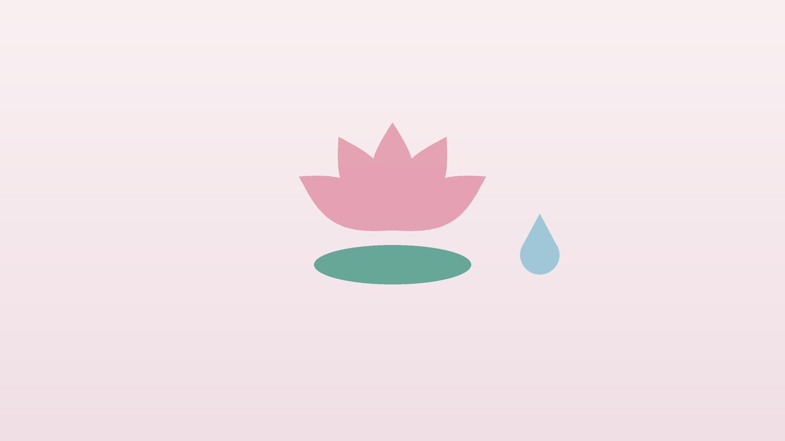

건강 칼럼 · 인천 질염 한의원
냉이 늘고 가렵고 냄새가 난다면, 질염·냉대하 한방 관리

나의 냉, 이런 변화가 있나요?
- 속옷에 묻는 냉의 양이 평소보다 눈에 띄게 늘었다
- 생선 비린내 같은 냄새가 나고 관계 후에 더 심해진다
- 하얗고 으깬 두부나 치즈 같은 냉이 나오며 몹시 가렵다
- 노랗거나 초록빛이 도는 거품 섞인 냉이 나온다
- 소변을 볼 때나 관계할 때 따갑다
- 질염 치료를 받았는데 1년에 몇 번씩 다시 생긴다
이 체크리스트는 진단 도구가 아니라 상담이 필요한지 가늠해 보는 참고용입니다.
질염은 종류마다 어떻게 다른가요?
미국 질병통제예방센터(CDC)의 성매개감염 치료 지침은 냉의 이상을 일으키는 대표 원인으로 세 가지를 꼽습니다. 세균성 질염은 질을 지키는 유산균이 줄고 다른 세균이 늘어난 상태로, 묽은 회색빛 냉과 비린내가 특징이며 질 산도(pH)가 4.5보다 높아집니다. 칸디다 질염은 곰팡이균이 원인이며 냉은 하얗고 덩어리지고 가려움과 화끈거림이 두드러지는 반면 냄새는 심하지 않은 편입니다. 트리코모나스 질염은 원충에 의한 성매개 감염으로, 노란빛이나 초록빛 거품 냉과 따가움이 나타나지만 증상이 거의 없는 경우도 많습니다.
같은 지침에 따르면 세균성 질염과 칸디다 질염은 일반적으로 성 파트너를 함께 치료할 필요가 없지만, 트리코모나스는 파트너가 함께 치료를 받고 두 사람 모두 치료가 끝날 때까지 관계를 피해야 다시 옮지 않습니다. 칸디다 질염이 1년에 세 번 이상 생기면 재발성으로 보아 더 긴 치료 계획과 당뇨 같은 동반 요인 확인이 필요합니다. 증상만으로는 구분이 어렵고, 서로 겹쳐 생기기도 하므로 분비물 검사로 원인을 확인한 뒤 맞는 약을 쓰는 것이 기본입니다.
산부인과 진료가 먼저 필요한 신호
- 열이 나고 아랫배나 골반 깊은 곳이 아프다
- 냉에 피가 섞이거나 관계 후 출혈이 반복된다
- 외음부에 물집이나 궤양, 혹이 생겼다
- 임신 중이거나 임신 가능성이 있다
- 폐경 뒤에 냉이 늘거나 피가 비친다
- 새로운 파트너와 관계한 뒤 증상이 생겼다
골반염, 헤르페스 같은 다른 성매개 감염, 자궁경부 질환일 수 있어 검사가 필요합니다. 임신 중 질염은 조산과 관련될 수 있어 꼭 산부인과에서 치료받으세요.
한의학은 냉대하를 어떻게 보나요?
한의학에서는 냉이 지나치게 많아지는 것을 대하(帶下)라 하였습니다. 허리를 띠처럼 한 바퀴 두르는 경락인 대맥(帶脈)이 아래로 흘러내리는 것을 잡아 주지 못해 생긴다고 본 데서 나온 이름입니다. 청나라 부산(傅山)의 『부청주여과(傅靑主女科)』는 책의 첫머리를 대하로 시작하며 냉의 색에 따라 백대, 황대, 적대, 청대, 흑대로 나누었는데, 하얀 냉에는 완대탕(完帶湯), 노란 냉에는 이황탕(易黃湯)을 대표 처방으로 들었습니다.
원리로 보면 소화를 맡은 비(脾)가 약해 몸의 수분을 제대로 처리하지 못하면 습한 기운이 아래로 내려와 묽은 냉이 늘고, 그 습이 오래 머물러 열을 띠면 냄새와 가려움, 누런 냉이 된다고 보았습니다. 나이가 들거나 몸이 지쳐 신(腎)의 단속하는 힘이 약해지면 맑은 냉이 끊이지 않는다고 하였습니다. 이런 해석은 감염 자체를 치료하는 항생제나 항진균제를 대신하는 것이 아니라, 자주 재발하는 몸의 바탕을 살피는 데 활용합니다.
나의 냉대하는 어떤 유형일까?
1. 비허습성(脾虛濕盛) 묽은 냉이 끊이지 않는 유형
- 이런 분에게 많아요
- 식사가 불규칙하고 소화가 약한 분
- 나타나는 모습
- 하얗고 묽은 냉이 냄새 없이 계속 나온다
- 함께 오는 몸의 신호
- 식후 더부룩함, 다리 부종, 무거운 몸
- 진찰에서 보이는 모습
- 혀가 붓고 가장자리에 잇자국, 설태가 흼
- 치료 방향
- 비장을 북돋우고 습을 말리는 방향 (완대탕 계열)
- 오늘부터 해 볼 것
- 찬 음료와 밀가루 간식을 줄이세요.
2. 습열하주(濕熱下注) 냄새와 가려움이 심한 유형
- 이런 분에게 많아요
- 단 음식과 술이 잦고 몸에 열이 많은 분
- 나타나는 모습
- 누렇고 끈적한 냉, 비린내, 가려움과 따가움
- 함께 오는 몸의 신호
- 소변이 진하고 따가움, 입이 씀
- 진찰에서 보이는 모습
- 혀가 붉고 설태가 누렇고 끈적함
- 치료 방향
- 습과 열을 함께 내리는 방향 (이황탕·용담사간탕 계열)
- 오늘부터 해 볼 것
- 통풍이 잘되는 면 속옷을 입고 꽉 끼는 옷을 피하세요.
3. 신허(腎虛) 맑은 냉이 새는 유형
- 이런 분에게 많아요
- 폐경 전후이거나 출산을 여러 번 한 분
- 나타나는 모습
- 맑고 묽은 냉이 조금씩 오래 나온다
- 함께 오는 몸의 신호
- 허리 시큰함, 밤에 소변이 잦음, 추위 탐
- 진찰에서 보이는 모습
- 맥이 깊고 약함
- 치료 방향
- 신을 보하여 단속하는 힘을 돕는 방향 (내보환 계열 가감)
- 오늘부터 해 볼 것
- 아랫배와 허리를 따뜻하게 하고 무리한 다이어트를 피하세요.
4. 간울(肝鬱) 피로하면 재발하는 유형
- 이런 분에게 많아요
- 스트레스가 크고 생리 전후로 증상이 몰리는 분
- 나타나는 모습
- 생리 전이나 피곤한 시기마다 가려움과 냉이 반복된다
- 함께 오는 몸의 신호
- 생리 전 가슴 통증, 예민함, 잠을 설침
- 진찰에서 보이는 모습
- 맥이 팽팽함
- 치료 방향
- 막힌 기운을 풀고 습열을 다스리는 방향 (단치소요산 계열)
- 오늘부터 해 볼 것
- 생리 전 일주일은 일정을 줄이고 잠을 먼저 챙기세요.
한의원에서는 어떻게 진찰하나요?
- 검사 결과 확인: 산부인과 분비물 검사 결과와 처방받은 약, 재발 횟수를 확인합니다.
- 냉과 주기: 냉의 색, 양, 냄새가 생리 주기에 따라 어떻게 달라지는지 여쭙니다.
- 동반 요인: 당뇨, 항생제 복용, 피임 방법, 임신 가능성, 세정제 사용 습관을 살핍니다.
- 설진·맥진: 습과 열, 허한 정도를 판단해 유형을 정합니다.
침·약침·한약 치료는 어떻게 하나요?
1. 침 치료
- 대맥(帶脈): 옆구리 아래, 열한 번째 갈비뼈 끝에서 수직으로 내려와 배꼽 높이와 만나는 곳. 냉대하의 대표 혈입니다.
- 음릉천(陰陵泉): 무릎 안쪽 아래, 정강이뼈 안쪽 모서리를 따라 올라가다 멈추는 오목한 곳. 습을 빼는 데 씁니다.
- 삼음교(三陰交): 안쪽 복사뼈에서 손가락 네 마디 위. 임신 가능성이 있으면 쓰지 않습니다.
- 차료(次髎): 엉치뼈의 두 번째 구멍 자리. 골반 안의 순환을 돕습니다.
침 치료는 질 안의 감염을 직접 없애지 못하므로 산부인과 약물 치료를 대신하지 않습니다. 재발이 잦은 분의 몸 상태를 돌보는 보조 관리로 활용하며, 재발 간격을 기록하면서 경과를 봅니다.
2. 약침
허리와 엉치, 아랫배 주변의 관련 경혈에 소량의 약침을 적용해 골반 주변의 차가움과 긴장을 덜어 줍니다. 외음부나 질 주변에는 시술하지 않습니다.
3. 한약
유형에 따라 습을 말리거나 열을 내리거나 바탕을 보충하는 처방을 씁니다. 항진균제나 항생제를 복용하는 중이라면 처방전을 보여 주시고, 임신을 준비하거나 임신 중이라면 진료 때 꼭 알려 주세요. 확인 후 안전한 약재로 처방합니다.
원장님이 네이버 블로그에 진료 이야기와 건강 정보를 꾸준히 올리고 있습니다. 더 많은 이야기는 블로그에서 확인해 보세요.
블로그 보기치료는 어떤 순서로 진행되나요?
- 산부인과 검사 분비물 검사로 원인균을 확인하고 맞는 약물 치료를 받습니다.
- 첫 한방 진료 재발 양상과 유형을 확인하고 생활 습관을 함께 점검합니다.
- 4~8주 주 1~2회 침 치료와 한약으로 습열과 피로, 생리 전 악화를 관리합니다.
- 재발 관찰 생리 주기 두세 번 동안 냉의 변화를 기록하며 간격을 늘립니다.
질염이 다시 생기면 같은 약을 임의로 쓰기 전에 산부인과 검사로 원인을 다시 확인하는 것이 좋습니다.
질 건강을 지키는 생활 관리
- 세정 줄이기: 질 안을 물이나 세정제로 씻어 내는 질 세척은 유익균을 줄일 수 있어 피하고, 외음부만 미지근한 물로 씻습니다.
- 통풍: 젖은 수영복이나 운동복은 빨리 갈아입고, 팬티라이너를 하루 종일 쓰지 않습니다.
- 항생제: 항생제를 처방받으면 정해진 기간을 지키고, 질염이 잦았다면 미리 의사에게 알립니다.
- 혈당: 당뇨가 있다면 혈당 조절이 칸디다 재발을 줄이는 데 중요합니다.
- 관계와 콘돔: 트리코모나스는 파트너와 함께 치료를 마칠 때까지 관계를 쉬고, 콘돔은 성매개 감염 예방에 도움이 됩니다.
다른 진료가 함께 필요한 경우
- 트리코모나스 진단을 받았다면 파트너도 비뇨의학과나 산부인과에서 치료를 받아야 합니다.
- 칸디다 질염이 해마다 세 번 이상이라면 혈당 검사를 받아 보세요.
- 외음부가 하얗게 변하고 얇아지며 가렵다면 피부 질환일 수 있어 산부인과 진찰이 필요합니다.
- 자궁경부암 검진 시기가 지났다면 이번 기회에 함께 받으세요.
자주 묻는 질문 Q&A
- Q1. 냉이 많으면 모두 질염인가요?
- 배란기나 임신 중에는 냄새 없는 맑은 냉이 늘 수 있습니다. 냄새, 가려움, 색 변화가 있으면 검사를 받으세요.
- Q2. 약국 질정을 써도 되나요?
- 처음이거나 증상이 다르다면 검사로 원인을 확인한 뒤 쓰는 것이 좋습니다. 원인에 따라 약이 다릅니다.
- Q3. 남편이나 남자친구도 치료해야 하나요?
- 트리코모나스는 함께 치료해야 합니다. 세균성 질염과 칸디다는 대개 파트너 치료가 필요하지 않습니다.
- Q4. 생리 전마다 질염이 생겨요.
- 호르몬 변화와 피로가 겹치는 시기라 재발이 잦습니다. 이 시기의 관리를 함께 계획합니다.
- Q5. 임신 중인데 한약을 먹어도 되나요?
- 질염 자체는 산부인과 처방을 우선 따르세요. 한약은 임신 중임을 알려 주시면 확인 후 안전한 약재로 처방합니다.
- Q6. 유산균을 먹으면 도움이 되나요?
- 도움이 된다는 연구도 있지만 결과가 일정하지 않아, 치료약을 대신하지는 못합니다.
- Q7. 침을 맞으면 질염이 낫나요?
- 침은 감염을 직접 치료하지 못하며, 재발이 잦은 몸 상태를 돌보는 보조 관리입니다.
- Q8. 치료는 얼마나 받아야 하나요?
- 보통 4~8주 동안 생리 주기에 따른 변화를 보며 정합니다.
문원열 대표원장한의사 · 365스마일한의원
인천 서구 가정동 한자리에서 10년 넘게 진료하며, 환자 한 분 한 분의 아픔을 깊이 들여다보고 근본적인 원인을 찾는 진료를 지향합니다.
진료 안내
- 진료시간
- 평일 09:00~20:00 (점심시간 13:00~14:00)
토·일·공휴일 09:00~15:00 - 주소
- 인천광역시 서구 가경주로 46, 2층 (가정동)
인천2호선 가정중앙시장역 인근
영상으로 길 안내 보기 → - 주차
- 한의원 건물 바로 앞 1층 도원주차장
- 예약
- 예약 바로가기 또는 전화 예약
진료시간은 사정에 따라 바뀔 수 있으니 방문 전 전화로 확인해 주세요.
함께 읽으면 좋은 칼럼
건강 칼럼 전체 보기 →


참고 자료
- Workowski KA, et al. Sexually Transmitted Infections Treatment Guidelines, 2021. MMWR Recommendations and Reports, 2021;70(4)
- 부산(傅山), 『부청주여과(傅靑主女科)』 대하(帶下)
- 질병관리청 국가건강정보포털 — 원문
※ 이 글은 일반적인 건강 정보이며, 개인의 상태에 따라 치료 방법과 결과는 다를 수 있습니다. 정확한 진단과 치료는 진료를 통해 결정됩니다. 침·약침 시술 후 드물게 멍, 통증 등이 생길 수 있습니다.